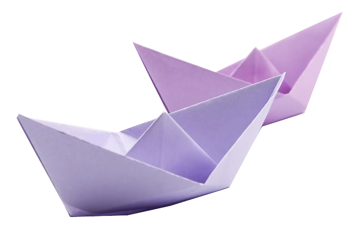

- Start with your rectangular paper, orient it vertically, with the long edges going up and down.
- Fold the bottom half up to the top.
- Fold the bottom right corner over to the left corner and make a small pinch, just enough to crease the paper. Open it back up.
|
/traditional-origami-boat-01-576cade33df78cb62ca1c650.jpg)
|
- Using the crease as a guide, fold the left and right bottom corners up and to the middle.
- Flatten the folded pieces down.
- Rotate the paper.
- Fold one layer from the bottom up along the bottom of the front flaps.
|
/traditional-origami-boat-02-576cae555f9b585875d24a80.jpg) |
- Flip the paper over to the other side.
- Fold the bottom edge up in the same way.
- Unfold, and then fold the bottom right corner in, along the crease you made.
- Repeat on the bottom left flap.
|
/traditional-origami-boat-03-576cae193df78cb62ca1c652.jpg) |
- Re-fold the bottom edge back up.
- Open the bottom of the model.
- Look at the corners. Flatten and then insert the overlapping flap on the left underneath the right section.
|
/traditional-origami-boat-04-576cb4445f9b585875d25176.jpg) |
- Fold one layer up to the top.
- Repeat on the back.
- Open the bottom of the model.
|
/traditional-origami-boat-05-576cae443df78cb62ca1c69c.jpg) |
- Pull apart the left and right flaps.
- latten it out, in the shape of a boat
- Open it slightly. The triangle in the middle resembles a sail. And, you're done.
- You may want to shape the underside of the boat so that it can stand up.
|
/traditional-origami-boat-06-576cae655f9b585875d24a83.jpg) |
|
Voila!  |